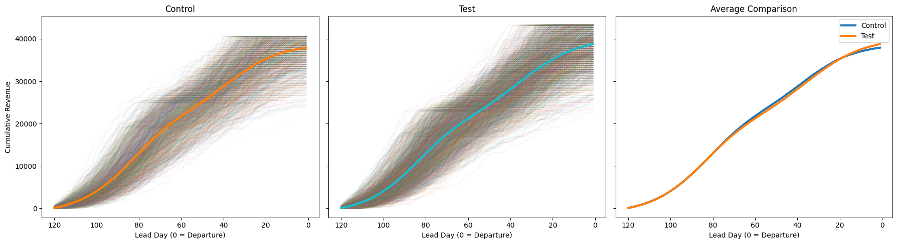
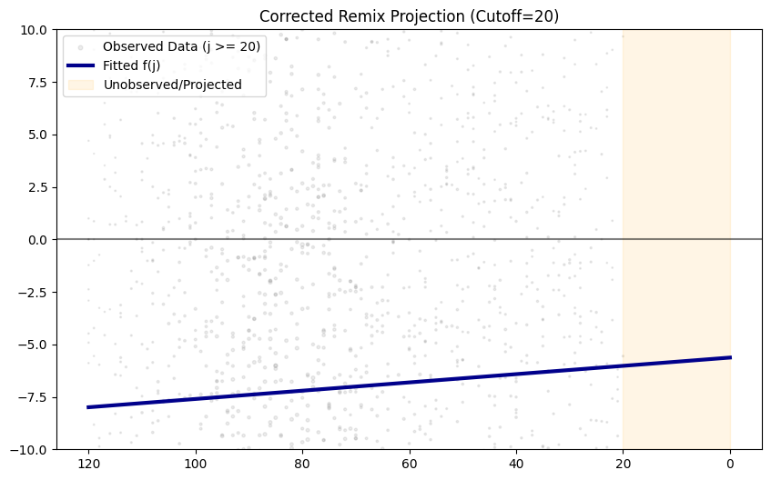
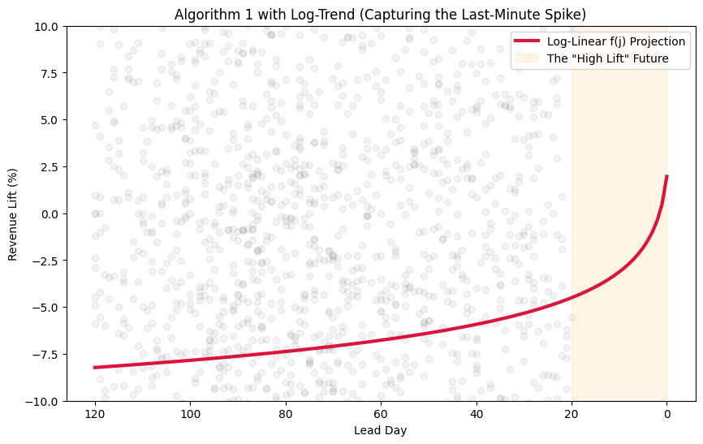

import pandas as pd
import numpy as np
import matplotlib.pyplot as pltMath section here – following the paper step by step
df = pd.read_csv("experiment_data.csv") # fixing claude's incredible fuck up
# 1 forgot dep day...
unique_flights = df.flight_id.unique()
dep_day_mapping = {flight_id: np.random.randint(1, 31) for flight_id in unique_flights}
df['departure_day'] = df.flight_id.map(dep_day_mapping)
# 2 generated exact same flights...
control_flights = np.random.choice(unique_flights, size = 1500)
df = pd.concat( [
df.loc[
(df.flight_id.isin(control_flights))
& (df.arm == 'control')
],
df.loc[
(~df.flight_id.isin(control_flights))
& (df.arm == 'test')
]
]
)df = df.sort_values(["flight_id", "arm", "lead_day"], ascending=False)
df["cummulative_revenue"] = (
df.groupby(["flight_id", "arm"])["daily_revenue"]
.cumsum()
)
groups = {
"Control": df[df["arm"] == "control"],
"Test": df[df["arm"] == "test"]
}
# Precompute averages
averages = {
name: g.groupby("lead_day")["cummulative_revenue"].mean()
for name, g in groups.items()
}
fig, axes = plt.subplots(1, 3, figsize=(18, 5), sharey=True)
# First two panels
for ax, (name, g) in zip(axes[:2], groups.items()):
for _, flight in g.groupby("flight_id"):
ax.plot(flight["lead_day"], flight["cummulative_revenue"], alpha=0.05)
ax.plot(
averages[name].index,
averages[name].values,
linewidth=3,
label=f"{name} Average"
)
ax.set_title(name)
ax.set_xlabel("Lead Day (0 = Departure)")
ax.invert_xaxis()
axes[0].set_ylabel("Cumulative Revenue")
# Third panel: comparison
ax = axes[2]
for name, avg in averages.items():
ax.plot(avg.index, avg.values, linewidth=3, label=name)
ax.set_title("Average Comparison")
ax.set_xlabel("Lead Day (0 = Departure)")
ax.invert_xaxis()
ax.legend()
plt.tight_layout()
plt.show()
i is a specific flight_id j is a lead day l listing – not sure what this means here? like what’s a listing compared to night? I assume here that it’s the equivalent of a market.
We first comppute \(r_{i, j}^{treatment}\) as the cumsum of revenue of a flight booked j days ahead.
# comuting r_{i,j}
# df = df.sort_values(["flight_id", "arm", "lead_day"], ascending=False)
# df["cummulative_revenue"] = (
# df.groupby(["flight_id", "arm"])["daily_revenue"]
# .cumsum()
# )
# computing m_{i, j}
df["m(i, j)"] = (
df.groupby(['departure_day', 'lead_day', 'arm'])['daily_revenue']
.transform('mean')
)
# computing LIFT_{i, j}
df_wide = df.pivot_table(
index=['departure_day', 'lead_day'],
columns='arm',
values=['daily_revenue', 'm(i, j)'], # add all your columns here
aggfunc='mean'
).reset_index()
df_wide['lift(i, j)'] = (
(df_wide['m(i, j)']['test'] - df_wide['m(i, j)']['control'])
/df_wide['m(i, j)']['control']
)
# computing w(i, j)
df_wide['m(i)'] = df_wide.groupby('departure_day')[[('m(i, j)', 'control')]].transform('sum')
df_wide['w(i, j)'] = (
df_wide['m(i, j)']['control'] / df_wide['m(i)']
)# computing lift(i)
df_wide['w_lift(i, j)'] = df_wide['w(i, j)'] * df_wide['lift(i, j)']
print("weighted lift estimates")
df_wide.groupby('departure_day')['w_lift(i, j)'].sum().reset_index()weighted lift estimates| departure_day | w_lift(i, j) | |
|---|---|---|
| 0 | 1 | 0.016491 |
| 1 | 2 | 0.054978 |
| 2 | 3 | 0.029731 |
| 3 | 4 | 0.043528 |
| 4 | 5 | 0.048429 |
| 5 | 6 | 0.005575 |
| 6 | 7 | 0.044849 |
| 7 | 8 | 0.026891 |
| 8 | 9 | 0.019256 |
| 9 | 10 | 0.045583 |
| 10 | 11 | -0.007886 |
| 11 | 12 | 0.000330 |
| 12 | 13 | 0.028356 |
| 13 | 14 | 0.006518 |
| 14 | 15 | 0.041013 |
| 15 | 16 | -0.007808 |
| 16 | 17 | -0.012034 |
| 17 | 18 | 0.026387 |
| 18 | 19 | 0.013010 |
| 19 | 20 | 0.025861 |
| 20 | 21 | 0.025527 |
| 21 | 22 | 0.016046 |
| 22 | 23 | 0.069728 |
| 23 | 24 | 0.036530 |
| 24 | 25 | 0.018635 |
| 25 | 26 | 0.025798 |
| 26 | 27 | 0.018111 |
| 27 | 28 | 0.032492 |
| 28 | 29 | -0.003477 |
| 29 | 30 | -0.039528 |
check = df.query("departure_day == 29").groupby('arm').daily_revenue.mean()(check['test'] - check['control']) / check['control']np.float64(-0.003476560516024077)regression part
# 1. Calculate variance
var_series = df_wide.groupby(['departure_day', 'lead_day', 'arm'])['daily_revenue'].var()
var_df = var_series.unstack('arm')
var_df.columns = pd.MultiIndex.from_tuples([('var', 'control'), ('var', 'test')], names=[None, 'arm'])
df_wide = df_wide.merge(var_df.reset_index(), on=['departure_day', 'lead_day'], how='left')
# 3. Calculate Var(LIFT_ij) using the Delta Method (Equation 4)
# Accessing using the tuples to match your MultiIndex
m_c = df_wide[('m(i, j)', 'control')]
m_t = df_wide[('m(i, j)', 'test')]
v_c = df_wide[('var', 'control')]
v_t = df_wide[('var', 'test')]
# Delta Method: (1/mc^2) * (vt + (mt/mc)^2 * vc)
df_wide['var_lift_ij'] = (1 / (m_c**2)) * (v_t + ((m_t / m_c)**2 * v_c))
# 4. Create weights for WLS
df_wide['wls_weight'] = 1 / df_wide['var_lift_ij']
df_wide['wls_weight'] = df_wide['wls_weight'].replace([np.inf, -np.inf], 0).fillna(0)--------------------------------------------------------------------------- KeyError Traceback (most recent call last) Cell In[38], line 2 1 # 1. Calculate variance ----> 2 var_series = df_wide.groupby(['departure_day', 'lead_day', 'arm'])['daily_revenue'].var() 3 var_df = var_series.unstack('arm') 4 var_df.columns = pd.MultiIndex.from_tuples([('var', 'control'), ('var', 'test')], names=[None, 'arm']) File ~/miniconda3/lib/python3.12/site-packages/pandas/core/frame.py:9183, in DataFrame.groupby(self, by, axis, level, as_index, sort, group_keys, observed, dropna) 9180 if level is None and by is None: 9181 raise TypeError("You have to supply one of 'by' and 'level'") -> 9183 return DataFrameGroupBy( 9184 obj=self, 9185 keys=by, 9186 axis=axis, 9187 level=level, 9188 as_index=as_index, 9189 sort=sort, 9190 group_keys=group_keys, 9191 observed=observed, 9192 dropna=dropna, 9193 ) File ~/miniconda3/lib/python3.12/site-packages/pandas/core/groupby/groupby.py:1329, in GroupBy.__init__(self, obj, keys, axis, level, grouper, exclusions, selection, as_index, sort, group_keys, observed, dropna) 1326 self.dropna = dropna 1328 if grouper is None: -> 1329 grouper, exclusions, obj = get_grouper( 1330 obj, 1331 keys, 1332 axis=axis, 1333 level=level, 1334 sort=sort, 1335 observed=False if observed is lib.no_default else observed, 1336 dropna=self.dropna, 1337 ) 1339 if observed is lib.no_default: 1340 if any(ping._passed_categorical for ping in grouper.groupings): File ~/miniconda3/lib/python3.12/site-packages/pandas/core/groupby/grouper.py:1043, in get_grouper(obj, key, axis, level, sort, observed, validate, dropna) 1041 in_axis, level, gpr = False, gpr, None 1042 else: -> 1043 raise KeyError(gpr) 1044 elif isinstance(gpr, Grouper) and gpr.key is not None: 1045 # Add key to exclusions 1046 exclusions.add(gpr.key) KeyError: 'arm'
import statsmodels.api as sm
# We filter for rows where we actually have a lift calculation
fit_data = df_wide.dropna(subset=['lift(i, j)', 'wls_weight']).copy()
fit_data = fit_data[fit_data['wls_weight'] > 0]
fit_data = fit_data.query("lead_day > 1")
# 2. Fit f(j): Lift as a function of Lead Day
# We use WLS where weights = 1 / Var(Lift_ij)
# f(j) = alpha + beta * lead_day
X = sm.add_constant(fit_data['lead_day'])
y = fit_data['lift(i, j)'] # Use raw decimals for the math
weights = fit_data['wls_weight']
f_j_model = sm.WLS(y, X, weights=weights).fit()--------------------------------------------------------------------------- KeyError Traceback (most recent call last) /var/folders/zh/fcpnh38d1w33gxnhyc23l6g40000gn/T/ipykernel_18841/3085713426.py in ?() 2 3 4 5 # We filter for rows where we actually have a lift calculation ----> 6 fit_data = df_wide.dropna(subset=['lift(i, j)', 'wls_weight']).copy() 7 fit_data = fit_data[fit_data['wls_weight'] > 0] 8 fit_data = fit_data.query("lead_day > 1") 9 ~/miniconda3/lib/python3.12/site-packages/pandas/core/frame.py in ?(self, axis, how, thresh, subset, inplace, ignore_index) 6666 ax = self._get_axis(agg_axis) 6667 indices = ax.get_indexer_for(subset) 6668 check = indices == -1 6669 if check.any(): -> 6670 raise KeyError(np.array(subset)[check].tolist()) 6671 agg_obj = self.take(indices, axis=agg_axis) 6672 6673 if thresh is not lib.no_default: KeyError: ['lift(i, j)', 'wls_weight']
df_wide| departure_day | lead_day | daily_revenue | m(i, j) | lift(i, j) | m(i) | w(i, j) | w_lift(i, j) | var | var_lift_ij | wls_weight | ||||
|---|---|---|---|---|---|---|---|---|---|---|---|---|---|---|
| arm | control | test | control | test | control | test | ||||||||
| 0 | 1 | 1 | 55.882353 | 51.111111 | 55.882353 | 51.111111 | -0.085380 | 37838.235294 | 0.001477 | -0.000126 | 24358.288770 | 21646.464646 | 13.456638 | 0.074313 |
| 1 | 1 | 2 | 82.352941 | 128.888889 | 82.352941 | 128.888889 | 0.565079 | 37838.235294 | 0.002176 | 0.001230 | 33012.477718 | 69828.282828 | 22.219303 | 0.045006 |
| 2 | 1 | 3 | 91.176471 | 173.333333 | 91.176471 | 173.333333 | 0.901075 | 37838.235294 | 0.002410 | 0.002171 | 33556.149733 | 112909.090909 | 28.170306 | 0.035498 |
| 3 | 1 | 4 | 29.411765 | 184.444444 | 29.411765 | 184.444444 | 5.271111 | 37838.235294 | 0.000777 | 0.004097 | 29411.764706 | 103161.616162 | 1456.367204 | 0.000687 |
| 4 | 1 | 5 | 111.764706 | 137.777778 | 111.764706 | 137.777778 | 0.232749 | 37838.235294 | 0.002954 | 0.000687 | 42281.639929 | 66949.494949 | 10.503556 | 0.095206 |
| ... | ... | ... | ... | ... | ... | ... | ... | ... | ... | ... | ... | ... | ... | ... |
| 3595 | 30 | 116 | 125.000000 | 89.361702 | 125.000000 | 89.361702 | -0.285106 | 38281.250000 | 0.003265 | -0.000931 | 30322.580645 | 17058.279371 | 2.083541 | 0.479952 |
| 3596 | 30 | 117 | 143.750000 | 93.617021 | 143.750000 | 93.617021 | -0.348751 | 38281.250000 | 0.003755 | -0.001310 | 26411.290323 | 22349.676226 | 1.623658 | 0.615893 |
| 3597 | 30 | 118 | 100.000000 | 80.851064 | 100.000000 | 80.851064 | -0.191489 | 38281.250000 | 0.002612 | -0.000500 | 20645.161290 | 30712.303423 | 4.420783 | 0.226204 |
| 3598 | 30 | 119 | 118.750000 | 76.595745 | 118.750000 | 76.595745 | -0.354983 | 38281.250000 | 0.003102 | -0.001101 | 28024.193548 | 14875.115634 | 1.881670 | 0.531443 |
| 3599 | 30 | 120 | 87.500000 | 68.085106 | 87.500000 | 68.085106 | -0.221884 | 38281.250000 | 0.002286 | -0.000507 | 23064.516129 | 14394.079556 | 3.704008 | 0.269978 |
3600 rows × 14 columns
import pandas as pd
import numpy as np
import statsmodels.api as sm
import matplotlib.pyplot as plt
from tqdm import tqdm
# --- CONFIG ---
CUTOFF = 20
N_BOOTSTRAP = 100
VAR_FLOOR = 0.0001 # Prevents infinite weights for low-volume days
# --- 1. PREPARE DATA ---
# Flatten names if not already done
df_wide.columns = ['_'.join(filter(None, [str(c) for c in col])).strip() if isinstance(col, tuple) else col for col in df_wide.columns]
# Apply Variance Floor to stabilize WLS
df_wide['wls_weight'] = 1 / (df_wide['var_lift_ij'] + VAR_FLOOR)
fit_data = df_wide.dropna(subset=['lift(i, j)', 'wls_weight']).copy()
# --- 2. BOOTSTRAP FUNCTION ---
def run_proactive_prediction(data_sample):
# Only train on what we've "seen" (Lead Day >= 20)
observed = data_sample[data_sample['lead_day'] >= CUTOFF]
X_obs = sm.add_constant(observed['lead_day'])
y_obs = observed['lift(i, j)']
w_obs = observed['wls_weight']
# Fit f(j)
model = sm.WLS(y_obs, X_obs, weights=w_obs).fit()
# Predict for the FULL range for plotting
all_js = np.arange(0, 121)
return model.predict(sm.add_constant(all_js))
# --- 3. RUN BOOTSTRAP ---
unique_days = fit_data['departure_day'].unique()
bootstrap_results = []
for _ in tqdm(range(N_BOOTSTRAP)):
resampled_days = np.random.choice(unique_days, size=len(unique_days), replace=True)
sample = pd.concat([fit_data[fit_data['departure_day'] == d] for d in resampled_days])
bootstrap_results.append(run_proactive_prediction(sample))
boot_array = np.array(bootstrap_results)
mean_f_j = np.mean(boot_array, axis=0)
# --- 4. PLOT FIX ---
plt.figure(figsize=(10, 6))
# ONLY scatter data we have actually observed (j >= 20)
observed_only = fit_data[fit_data['lead_day'] >= CUTOFF]
plt.scatter(observed_only['lead_day'], observed_only['lift(i, j)'] * 100,
s=observed_only['wls_weight']*5, alpha=0.15, color='gray', label='Observed Data (j >= 20)')
# Plot trend
plt.plot(np.arange(0, 121), mean_f_j * 100, color='darkblue', lw=3, label='Fitted f(j)')
# Formatting
plt.axvspan(0, CUTOFF, color='orange', alpha=0.1, label='Unobserved/Projected')
plt.ylim(-10, 10)
plt.gca().invert_xaxis()
plt.axhline(0, color='black', alpha=0.5)
plt.legend(loc='upper left')
plt.title(f"Corrected Remix Projection (Cutoff={CUTOFF})")
plt.show()
# --- 5. THE REMIX (Step 7) ---
# Observed part: use actual lift. Unobserved part: use f_hat_j
fit_data['f_hat_j'] = mean_f_j[fit_data['lead_day'].values.astype(int)]
fit_data['remixed_lift'] = np.where(fit_data['lead_day'] >= CUTOFF, fit_data['lift(i, j)'], fit_data['f_hat_j'])
# Calculate final weighted estimate
final_lift = (fit_data['remixed_lift'] * fit_data['w(i, j)']).sum() * 100
print(f"Final Remixed Estimate: {final_lift:.2f}%")100%|█████████████████████████████████████| 100/100 [00:00<00:00, 454.79it/s]
Final Remixed Estimate: -24.11%import pandas as pd
import numpy as np
import statsmodels.api as sm
import matplotlib.pyplot as plt
# --- 1. PREPARE NONLINEAR DATA ---
# We add 1 to lead_day to avoid log(0) errors
fit_data = df_wide.dropna(subset=['lift(i, j)', 'wls_weight']).copy()
fit_data['log_lead_day'] = np.log(fit_data['lead_day'] + 1)
# Pretend we are 20 days out
CUTOFF = 20
observed = fit_data[fit_data['lead_day'] >= CUTOFF]
# --- 2. FIT LOG-WLS MODEL ---
# f(j) = alpha + beta * log(j + 1)
X_obs = sm.add_constant(observed['log_lead_day'])
y_obs = observed['lift(i, j)']
w_obs = observed['wls_weight']
log_model = sm.WLS(y_obs, X_obs, weights=w_obs).fit()
# --- 3. PROJECT & REMIX ---
all_js = np.arange(0, 121)
X_full = sm.add_constant(np.log(all_js + 1))
f_hat_j = log_model.predict(X_full)
# Create the Remix: Actuals for j >= 20, Predictions for j < 20
fit_data['f_hat_j'] = fit_data['lead_day'].map(dict(zip(all_js, f_hat_j)))
fit_data['remixed_lift'] = np.where(
fit_data['lead_day'] >= CUTOFF,
fit_data['lift(i, j)'],
fit_data['f_hat_j']
)
# --- 4. VISUALIZE ---
plt.figure(figsize=(10, 6))
plt.plot(all_js, f_hat_j * 100, color='crimson', lw=3, label='Log-Linear f(j) Projection')
plt.scatter(observed['lead_day'], observed['lift(i, j)'] * 100, alpha=0.1, color='gray')
plt.axvspan(0, CUTOFF, color='orange', alpha=0.1, label='The "High Lift" Future')
plt.ylim(-10, 10) # Focused on the spike
plt.gca().invert_xaxis()
plt.title("Algorithm 1 with Log-Trend (Capturing the Last-Minute Spike)")
plt.ylabel("Revenue Lift (%)")
plt.xlabel("Lead Day")
plt.legend()
plt.show()
# Final Proactive Estimate
final_est = (fit_data['remixed_lift'] * fit_data['w(i, j)']).sum() * 100
print(f"Final Remixed Long-Term Estimate: {final_est:.2f}%")
Final Remixed Long-Term Estimate: -18.53%